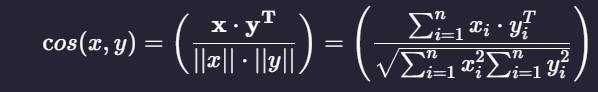

Plot description based Recommender
We will compute pairwise similarity scores for all movies based on their plot descriptions and recommend movies based on that similarity score. The plot description is given in the overview feature of our dataset.
With NLP Natural Language Processing, we have to convert the word vector of each overview Then compute Term Frequency-Inverse Document Frequency (TF-IDF) vectors for each overview.
Term Frequency is the relative frequency of a word in a document and is given as (term instances/total instances).
Inverse Document Frequency is the relative count of documents containing the term and is given as log(number of documents/documents with term)
The overall importance of each word to the documents in which they appear is equal to TF * IDF
This will give us a matrix where each column represents a word in the overview vocabulary (all the words that appear in at least one document) and each row represents a movie, as before.This is done to reduce the importance of words that occur frequently in plot overviews and therefore, their significance in computing the final similarity score.
We will just use scikit-learn module's built-in TfIdfVectorizer class that produces the TF-IDF matrix in a couple of lines.
We see that over 20,000 different words were used to describe the 4800 movies in our dataset.
With this matrix in hand, we can now compute a similarity score. There are several candidates for this; such as the euclidean, the Pearson and the cosine similarity scores. There is no right answer to which score is the best. Different scores work well in different scenarios and it is often a good idea to experiment with different metrics.
We will be using the cosine similarity to calculate a numeric quantity that denotes the similarity between two movies. We use the cosine similarity score since it is independent of magnitude and is relatively easy and fast to calculate. Mathematically, it is defined as follows:
Mathematically, it is defined as follows:

Result
While our system has done a decent job of finding movies with similar plot descriptions, the quality of recommendations is not that great.
"The Dark Knight Rises" returns all Batman movies while it is more likely that the people who liked that movie are more inclined to enjoy other Christopher Nolan movies. This is something that cannot be captured by the present system.